10
INTRODUCING CSS
- What CSS does
- How CSS works
- Rules, properties, and values
In this section, we will look at how to make your web pages more attractive, controlling the design of them using CSS.
CSS allows you to create rules that specify how the content of an element should appear. For example, you can specify that the background of the page is cream, all paragraphs should appear in gray using the Arial typeface, or that all level one headings should be in a blue, italic, Times typeface.
Once you have learned how to write a CSS rule, learning CSS mostly involves learning the different properties you can use. So this chapter will:
- Introduce you to how CSS works
- Teach you how to write CSS rules
- Show you how CSS rules apply to HTML pages
The remaining chapters in this section will look at all of the various CSS properties you can use.
UNDERSTANDING CSS: THINKING INSIDE THE BOX
The key to understanding how CSS works is to imagine that there is an invisible box around every HTML element.
On this page, you can see a basic HTML page.
On the right hand page, you can see the same HTML page, but I have added outlines to each of the elements so that you can see how CSS will treat each element as if it lives inside its own box.
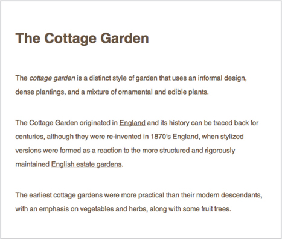
BLOCK & INLINE ELEMENTS
You may remember from pages 185-186 that in there is a difference between block level and inline elements and how how browsers display them.
Block level elements look like they start on a new line. Examples include the <h1>-<h6>, <p> and <div> elements.
Inline elements flow within the text and do not start on a new line. Examples include <b>, <i>, <img>, <em> and <span>.
CSS allows you to create rules that control the way that each individual box (and the contents of that box) is presented.
In this example, block level elements are shown with red borders, and inline elements have green borders.

The <body> element creates the first box, then the <h1>, <h2>, <p>, <i>, and <a> elements each create their own boxes within it.
Using CSS, you could add a border around any of the boxes, specify its width and height, or add a background color. You could also control text inside a box — for example, its color, size, and the typeface used.
EXAMPLE STYLES
BOXES
Width and height
Borders (color, width, and style)
Background color and images
Position in the browser window.
TEXT
Typeface
Size
Color
Italics, bold, uppercase, lowercase, small-caps
SPECIFIC
There are also specific ways in which you can style certain elements such as lists, tables, and forms.
CSS ASSOCIATES STYLE RULES WITH HTML ELEMENTS
CSS works by associating rules with HTML elements. These rules govern how the content of specified elements should be displayed. A CSS rule contains two parts: a selector and a declaration.
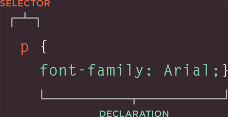
This rule indicates that all <p> elements should be shown in the Arial typeface.
Selectors indicate which element the rule applies to. The same rule can apply to more than one element if you separate the element names with commas.
Declarations indicate how the elements referred to in the selector should be styled. Declarations are split into two parts (a property and a value), and are separated by a colon.
CSS PROPERTIES AFFECT HOW ELEMENTS ARE DISPLAYED
CSS declarations sit inside curly brackets and each is made up of two parts: a property and a value, separated by a colon. You can specify several properties in one declaration, each separated by a semi-colon.
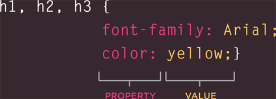
This rule indicates that all <h1>, <h2> and <h3> elements should be shown in the Arial typeface, in a yellow color.
Properties indicate the aspects of the element you want to change. For example, color, font, width, height and border.
Values specify the settings you want to use for the chosen properties. For example, if you want to specify a color property then the value is the color you want the text in these elements to be.
EXAMPLE
INTRODUCING CSS
Here you can see a simple web page that is styled using CSS.
This example uses two documents: the HTML file (example.html) and a separate CSS file (example.css). The fifth line of HTML uses the <link> element to indicate where the CSS file is located.
On the next page, you will see how CSS rules can also be placed in your HTML pages and we will discuss when you might want to do this.
<!DOCTYPE html>
<html>
<head>
<title>Introducing CSS</title>
<link href=“css/example.css” type=“text/css”
rel=“stylesheet” />
</head>
<body>
<h1>From Garden to Plate</h1>
<p>A <i>potager</i> is a French term for an
ornamental vegetable or kitchen garden … </p>
<h2>What to Plant</h2>
<p>Plants are chosen as much for their functionality
as for their color and form … </p>
</body>
</html>
body {
font-family: Arial, Verdana, sans-serif;}
h1, h2 {
color: #ee3e80;}
p {
color: #665544;}
USING EXTERNAL CSS
<link>
The <link> element can be used in an HTML document to tell the browser where to find the CSS file used to style the page. It is an empty element (meaning it does not need a closing tag), and it lives inside the <head> element. It should use three attributes:
href
This specifies the path to the CSS file (which is often placed in a folder called css or styles).
type
This attribute specifies the type of document being linked to. The value should be text/css.
rel
This specifies the relationship between the HTML page and the file it is linked to. The value should be stylesheet when linking to a CSS file.
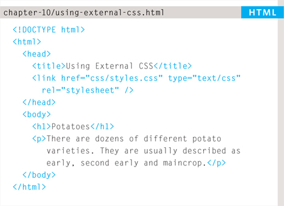
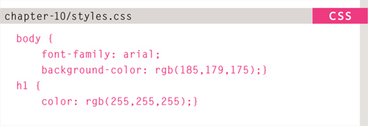
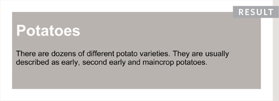
An HTML page can use more than one CSS style sheet. To do this it could have a <link> element for every CSS file it uses. For example, some authors use one CSS file to control the presentation (such as fonts and colors) and a second to control the layout.
USING INTERNAL CSS
<style>
You can also include CSS rules within an HTML page by placing them inside a <style> element, which usually sits inside the <head> element of the page.
The <style> element should use the type attribute to indicate that the styles are specified in CSS. The value should be text/css.
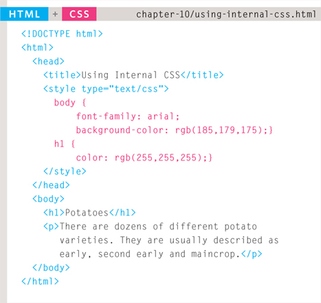
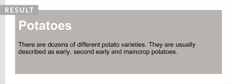
When building a site with more than one page, you should use an external CSS style sheet. This:
- Allows all pages to use the same style rules (rather than repeating them in each page).
- Keeps the content separate from how the page looks.
- Means you can change the styles used across all pages by altering just one file (rather than each individual page).
In HTML 4 and Transitional XHTML, you could also use a style attribute on most of the elements that appear in the body of a page. The CSS rules that appeared within the value of the attribute would only apply to that one element. You should avoid using this attribute in any new site but I mention it here because you may see it used in older code. Here is an example that changes the color of the text in a single paragraph red: <p style=“color:red;”>
CSS SELECTORS
There are many different types of CSS selector that allow you to target rules to specific elements in an HTML document.
The table on the opposite page introduces the most commonly used CSS selectors.
On this page, there is an HTML file to demonstrate which elements these CSS selectors would apply to.
CSS selectors are case sensitive, so they must match element names and attribute values exactly.
There are some more advanced selectors which allow you to select elements based on attributes and their values, which you will see on page 292.
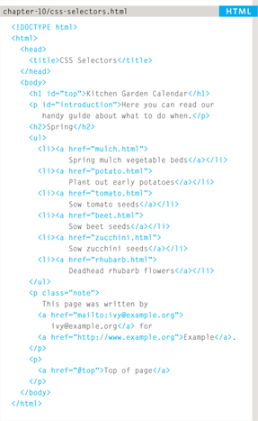
IE 7 was the first version of IE to support the last two selectors in the table (the sibling selectors), so their use is less common than the other selectors shown here.
HOW CSS RULES CASCADE
If there are two or more rules that apply to the same element, it is important to understand which will take precedence.
LAST RULE
If the two selectors are identical, the latter of the two will take precedence. Here you can see the second i selector takes precedence over the first.
SPECIFICITY
If one selector is more specific than the others, the more specific rule will take precedence over more general ones. In this example:
h1 is more specific than *
p b is more specific than p
p#intro is more specific than p
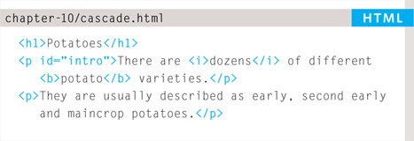
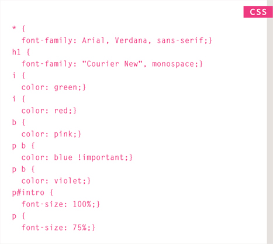
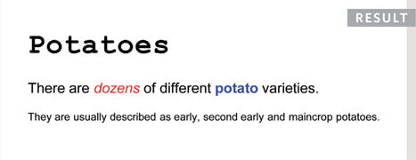
IMPORTANT
You can add !important after any property value to indicate that it should be considered more important than other rules that apply to the same element.
Understanding how CSS rules cascade means you can write simpler style sheets because you can create generic rules that apply to most elements and then override the properties on individual elements that need to appear differently.
INHERITANCE
If you specify the font-family or color properties on the <body> element, they will apply to most child elements. This is because the value of the font-family property is inherited by child elements. It saves you from having to apply these properties to as many elements (and results in simpler style sheets).
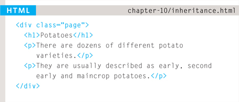
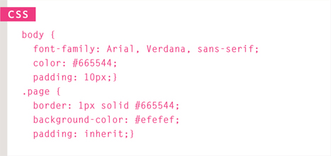
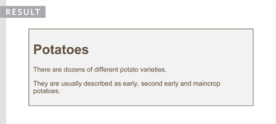
You can compare this with the background-color or border properties; they are not inherited by child elements. If these were inherited by all child elements then the page could look quite messy.
You can force a lot of properties to inherit values from their parent elements by using inherit for the value of the properties. In this example, the <div> element with a class called page inherits the padding size from the CSS rule that applies to the <body> element.
WHY USE EXTERNAL STYLE SHEETS?
When building a website there are several advantages to placing your CSS rules in a separate style sheet.
All of your web pages can share the same style sheet. This is achieved by using the <link> element on each HTML page of your site to link to the same CSS document. This means that the same code does not need to be repeated in every page (which results in less code and smaller HTML pages).
Therefore, once the user has downloaded the CSS stylesheet, the rest of the site will load faster. If you want to make a change to how your site appears, you only need to edit the one CSS file and all of your pages will be updated. For example, you can change the style of every <h1> element by altering the one CSS style sheet, rather than changing the CSS rules on every page. The HTML code will be easier to read and edit because it does not have lots of CSS rules in the same document. It is generally considered good practice to have the content of the site separated from the rules that determine how it appears.
Sometimes you might consider placing CSS rules in the same page as your HTML code.
If you are just creating a single page, you might decide to put the rules in the same file to keep everything in one place. (However, many authors would consider it better practice to keep the CSS in a separate file.)
If you have one page which requires a few extra rules (that are not used by the rest of the site), you might consider using CSS in the same page. (Again, most authors consider it better practice to keep all CSS rules in a separate file.)
Most of the examples in this book place the CSS rules in the <head> of the document (using the <style> element) rather than a separate document. This is simply to save you opening two files to see how the CSS examples work.
DIFFERENT VERSIONS OF CSS & BROWSER QUIRKS
CSS1 was released in 1996 and CSS2 followed two years later. Work on CSS3 has been ongoing but the major browsers have already started to implement it.
In the same way that there have been several versions of HTML, there have also been different versions of CSS.
Browsers did not implement all CSS features at once, so some older browsers do not support every property.
This is mentioned when it is likely to affect you, along with notes where CSS properties might not behave as expected.
Any seasoned user of CSS will tell you that some browsers display a few of the CSS properties in an unexpected way. But finding and squashing those bugs is easy when you know how…
Before launching any new site, it is important to test it in more than one browser, because ther can be slight differences in how browsers display the pages.
You do not need lots of computers to test your site, as there are online tools to show you what a page looks like in multiple browsers:
Using these tools, it is a good idea to check the site on different operating systems (PC, Mac, and Linux) and in older versions of the major browsers, as well as recent versions.
When you look at your site in more than one browser, you might find that some elements on your page do not look as you expect them to.
When a CSS property does not display as expected, it is generally referred to as a browser quirk or CSS bug.
Some common browser bugs are discussed in this book, but there are many smaller bugs that only occur in rare situations, or on old browsers that few people use.
If you come across a CSS bug, you can use your favorite search engine to try and find a solution. Or you can check these sites:
SUMMARY
INTRODUCING CSS
- CSS treats each HTML element as if it appears inside its own box and uses rules to indicate how that element should look.
- Rules are made up of selectors (that specify the elements the rule applies to) and declarations (that indicate what these elements should look like).
- Different types of selectors allow you to target your rules at different elements.
- Declarations are made up of two parts: the properties of the element that you want to change, and the value of those properties. For example, the font-family property sets the choice of font, and the value arial specifies Arial as the preferred typeface.
- CSS rules usually appear in a separate document, although they may appear within an HTML page.